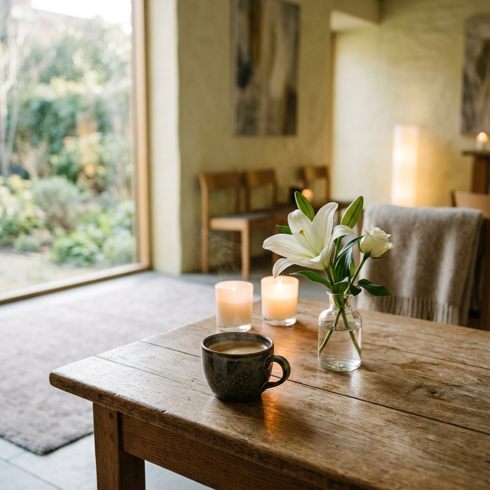

生命的終點，不是遺忘，而是圓滿謝幕。同仁社生命禮儀深知，失去至親是人生中最沉重的時刻。我們創立的初衷，便是以對待家人的心，為逝者策劃體面莊嚴的謝幕，也為家屬撐起一把溫暖的傘。
沒有繁複冰冷的程序，只有真心同理的傾聽。我們秉持誠懇踏實的在地精神，提供公開透明的費用，並依據家屬的信仰與預算，量身規劃溫馨且符合禮俗的告別儀式，讓思念化作前行的力量。
設身處地感受，提供最溫柔貼心的關懷與指引。
合約明細公開，拒絕惡意加價與強迫推銷。
注重每一個儀式細節，守護逝者最後的尊嚴。
同仁社為您規劃全面、有尊嚴的禮儀服務，陪伴家屬安心面對每一個細節
不論是傳統道教、佛教的超薦奠禮，或是基督教、天主教的追思禮拜，我們皆能依循不同宗教禮俗與家屬意願，設計莊嚴、溫馨的告別會場，完美傳遞無限的思念。
提供24小時不打烊的臨終指導，從出院接運、尊體安置至靈堂設立，都有禮儀師全程相伴。協助處理所有行政申辦流程，減輕家屬慌亂時的負擔。
奠禮結束後並非服務終點。同仁社協助安排火化入塔、晉塔手續，並提供後續百日、對年、三年、清明與除夕超薦的禮俗提醒，給予長期的溫馨關懷。
我們以極具條理、溫柔且嚴謹的步驟，陪伴家屬一步步圓滿家人的生命告別
不論是自家臨終或住院臨終，家屬撥打服務專線 (06-921-3000)，同仁社專案人員即刻啟動臨終禮儀諮詢，協助處理初終之相關證明證件與輔導辦理。
同仁社指派專人與禮儀專車，貼心前往醫院或家屬指定處提供遺體接運服務，並妥善安置家屬與尊體。
可依家屬意願與實際情況選擇兩種安置方式：
由禮儀人員引導進行接板、尊體入殮與封釘之重要民俗傳統科儀。
由專案管理師全程提供治喪期間各項相關服務與協調，說明並協調合約內容與增添項目、安排奉茶與頭七法事等宗教物品準備，並規劃訃聞型式、內容、印製份數與其他奠禮細節。
負責奠禮各項相關服務人員及儀式用品之聯繫與準備；辦理擇日、訂火化爐（火葬場），並就奠禮流程、會場佈置及相關物品擺設提出專業的配置建議。
最終確認奠禮會場佈置與相關祭拜用品；協助引導移靈、宗教儀式、舉行家奠禮與公奠禮。由專業司儀主持儀式並指派服務人員接待前來弔唁的親友來賓，奠禮圓滿後啟靈、移柩至火葬場。
於火葬場擺設祭品進行莊嚴的火化儀式；火化完成後引導家屬進行撿骨與封罐。隨後指派專人協助家屬返家安靈、完成洗淨與除喪程序。
由專人隨行協助，將逝者骨灰罐晉奉安置於納骨塔、寺廟、宗祠或其他指定的安息處所。
同仁社專案人員提供進塔吉日諮詢、做百日禮俗提醒，並提供作對年、三年合爐等長期祭祀科儀輔導，陪伴家屬走向內心平靜。

傳統告別式往往給人漫長且沉重的感受，同仁社特別規劃「追思咖啡點心吧」服務，在治喪奠禮會場旁設立一個優雅、溫暖的角落。我們提供現磨熱咖啡、靜心茶飲以及精緻美味的手工點心。
讓前來致哀的親友在等待儀式或思念的片刻，能夠手捧一杯溫熱的咖啡，在暖心香氣中撫平哀傷，也讓親友間能有空間溫馨對話、分享逝者生前的點滴美好。這不只是一杯咖啡，更是對遠道而來賓客最誠懇、體貼的謝意。
同仁社為您規劃最真誠、透明的兩大主打專案，滿足自宅治喪或園區禮堂的不同需求
給予家人最尊榮、便利的自宅告別奠禮
適合於澎湖福園殯儀館（丙級慎終堂）舉辦
同仁社堅持誠懇至上、公開明細。您可以依需求自主勾選項目，進行線上初步預算估算
※ 本試算不包含殯儀館官方規費（如冰庫租金、火化規費、政府塔位規費等）。詳情請洽禮儀顧問。
初次面對治喪難免徬徨，同仁社為您整理了實用的治喪知識解答
不論您有任何禮儀規劃的諮詢、緊急治喪接運、或是對於費用的疑問，隨時歡迎您撥打電話或留言。我們有專業溫柔的禮儀師隨時為您解答。
06-921-3000 (點擊可直接撥打)
880澎湖縣馬公市東文里民富街42巷7號
service@tongrenshe.com.tw
880澎湖縣馬公市東文里民富街42巷7號
電話：06-921-3000
( 24小時溫馨守護，備有治喪協調專用招待室 )